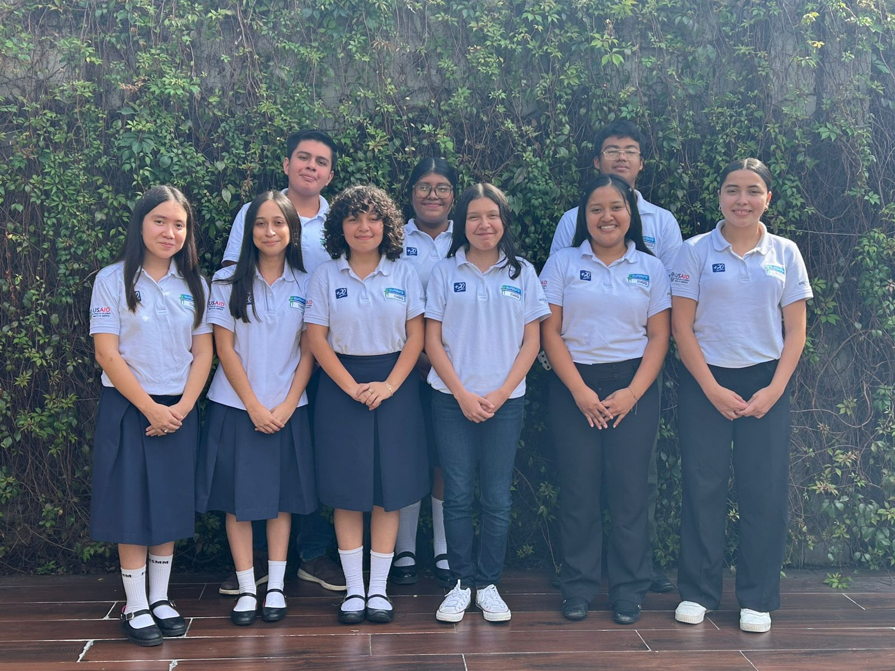
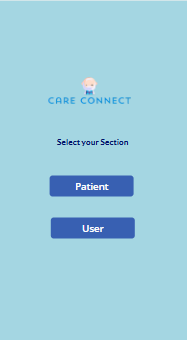
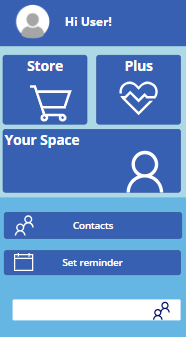
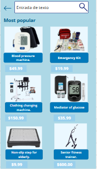
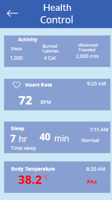
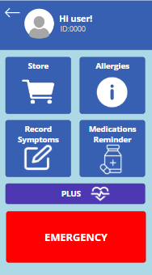
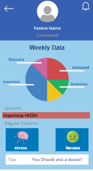

EL ORIGEN
Idea
Care Connection nació como una propuesta tecnológica orientada a facilitar el cuidado y seguimiento de personas adultas mayores, conectando a los pacientes con sus encargados mediante un parche digital.

PROYECTO · PRIMER AÑO

EL ORIGEN
Care Connection nació como una propuesta tecnológica orientada a facilitar el cuidado y seguimiento de personas adultas mayores, conectando a los pacientes con sus encargados mediante un parche digital.
NUESTRA META
Desarrollar una propuesta que permita mejorar el acompañamiento de las personas adultas mayores, facilitando el seguimiento de sus signos vitales, de información importante, recordatorios y situaciones que requieran atención.


TRABAJO COLABORATIVO
Este proyecto fue mi favorito por la experiencia de colaboración, aprendizaje y creatividad. A través del trabajo en equipo, compartimos ideas y desarrollamos una propuesta para responder a una necesidad real.
UNA MIRADA AL PROYECTO





